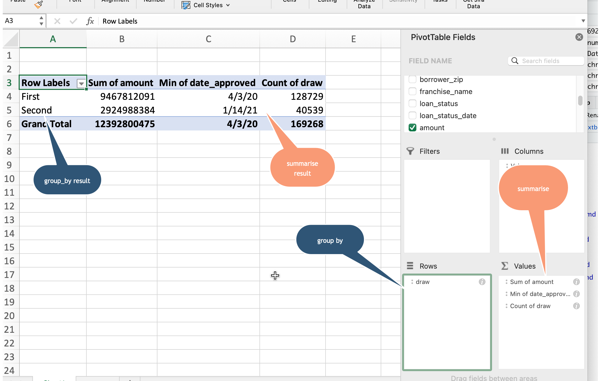
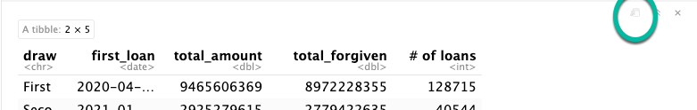
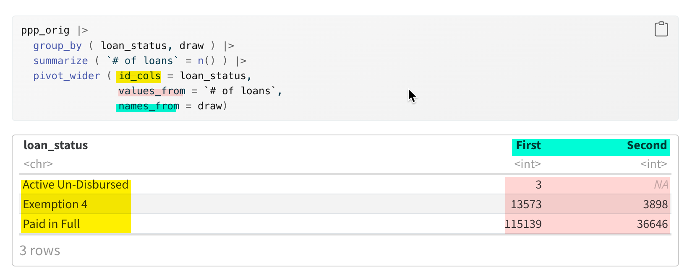

ppp_orig <- readRDS (
url (
"https://cronkitedata.s3.amazonaws.com/rdata/ppp_az_loans.RDS"
)
)15 Verbs in depth: Aggregating with groups
Editor’s note
I have tried and tried to write this chapter so it makes sense. I can’t do it. Think of it instead as three mini-chapters. You might want to skip the third section for now and come back to it when you are more comfortable.
- Section 1: Basic counting and summing with
group_byandsummarize - Section 2: Using and converting groups into spreadsheet (wide) format and percentages.
- Section 3: Understanding tidy data and how it makes grouping so powerful. You’ll find that things you expect to do for “wide” data is more efficiently done with groups. It’s counterintuitive.
In this chapter:
group_byandsummarizeare the tidyverse’s version of Excel pivot tables, with many more possibilities.- R is picky and will create different rows for the tiniest difference between values, such as “Lettuce” vs. “lettuce”.
group_byandsummarizeoften go together. 1- You will often have to accommodate missing data, or the dreaded “NA” values.
- Compute percent of total using grouped data
- Go from “long” database format to “wide” spreadsheet format and back using
pivot_functions. - An easy shortcut:
count() - Understanding grouped data as a “tidy” data structure with magical powers
This chapter continues with the Paycheck Protection Program, or PPP, loans in Arizona. Full documentation of the dataset is in the Appendix. If you haven’t already, look through that documentation before you start.
As you have in the last several chapters, open your R project and create a new Quarto document with the front matter and libraries.
Then load the saved PPP data with this code chunk:
15.1 summarize and group_by basics
summarize
summarize2 computes summary statistics such as the number of rows in a data frame or the sum of dollar values. It removes the original columns completely, and only produces the summary statistics you compute within that statement. Using summarize alone produces a data frame with one row. It’s the equivalent of putting nothing in your pivot table in Excel other than the “Values” area.
Another way to think of summarize is that it collapses your list of items (loans, in our example) into a statistical report.
The dreaded NA
You saw in the mutate section that missing values are always a problem. Because they’re unknown, they can’t match anything else, they can’t be considered 0, and they can warp any answers you get. But there’s usually nothing you can do about missing data, so you have to tell the program exactly what to do about them.
There are two choices:
- Let them infect everything they touch, turning everything into
NA. In this scenario, a total of the dollar values in a column would be NA if any of the values in that column is missing:
ppp_orig |>
summarize ( sum(forgiveness_amount))- Ignore them in a computation completely, effectively removing that value from your calculation. Be careful with this - it means that two summary statistics (say,
n()andsum()) could be using a different set of rows!
There’s no right answer, and it depends on what you’re doing. In some cases, you know that they stand for the value 0, and in others you don’t. We will usually ignore them by adding an argument to every summary function that could be infected by them : na.rm = TRUE , which means, “remove NA’s before you do anything.”.
Summary functions
Some of the common functions you’ll use to summarize are :
mean (column_name, na.rm=T)– for an average : Numbers onlysum (column_name, na.rm = T): Numbers onlyn()– for “how many”, or “count”. Anything - this counts rows, not valuesn_distinct ( column_name): The number of unique entries in the column. Use it to see how many categories there are in a column.median (column_name, na.rm=T): Numbers onlymin (column_name, na.rm=T): Dates and numbersmax (column_name , na.rm=T): Dates and numbers
When used on the whole data frame, it’s customary to just glimpse the output, since there’s only one row:
ppp_orig |>
summarize ( n(),
mean (amount, na.rm=T),
mean (forgiveness_amount, na.rm=T),
min (date_approved, na.rm=T),
max (date_approved, na.rm= T),
n_distinct ( business_type)
) |>
glimpse()Rows: 1
Columns: 6
$ `n()` <int> 169259
$ `mean(amount, na.rm = T)` <dbl> 73206.66
$ `mean(forgiveness_amount, na.rm = T)` <dbl> 77050.41
$ `min(date_approved, na.rm = T)` <date> 2020-04-03
$ `max(date_approved, na.rm = T)` <date> 2021-06-29
$ `n_distinct(business_type)` <int> 24This produced a data frame with 1 row and 5 columns. The column names are the same as the formulas that created them, which is difficult to work with. Create new column names using the name (in back-ticks if it’s got spaces or special characters) and assign them the values of the summaries using the = sign:
ppp_orig |>
summarize ( number_of_rows = n(),
mean_amount = mean (amount, na.rm=T),
median_amount = median (amount, na.rm=T),
mean_forgiven = mean (forgiveness_amount, na.rm=T), # doesn't count the missing as zero!
first_loan = min (date_approved, na.rm=T),
last_loan = max (date_approved, na.rm= T),
business_type_count = n_distinct(business_type)
) |>
glimpse()Rows: 1
Columns: 7
$ number_of_rows <int> 169259
$ mean_amount <dbl> 73206.66
$ median_amount <dbl> 20800
$ mean_forgiven <dbl> 77050.41
$ first_loan <date> 2020-04-03
$ last_loan <date> 2021-06-29
$ business_type_count <int> 24Grouping
Now that you know how to summarize the whole data frame, you’ll want to start getting totals by category. This is the same thing as a pivot table – the column names that create the “groups” are the equivalent of the Rows area a spreadsheet pivot table:

Grouping by one column
In the PPP data, the “draw” refers to which of the two programs was involved - the original one, or the one passed by Congress in late 2020.
Here’s how we’d get some key statistics by draw:
ppp_orig |>
group_by ( draw ) |>
summarize ( first_loan = min ( date_approved ),
total_amount = sum (amount),
total_forgiven = sum (forgiveness_amount, na.rm=T),
`# of loans` = n()
)Here are a couple of things to note about grouped output:
- The only columns saved are the ones that are shown in either the
group_byorsummarizerows. All of the other original columns have been eliminated. You no longer have them to work with .
- The names of the columns for the summary statistics are the ones defined before the “=” sign in the summarize statement.
- TRAP! Don’t ever name your summary columns the same thing as a group_by column. It will override those names, and your output will be unintelligible.
Naming your columns
Note that the name of the columns doesn’t always follow our standard. In this case, # of loans has a special character and spaces. In order to create or use it, you must enclose them in back-tics (`) or you’ll get an error.
Expand your table to a new window
If you’re using visual mode, the table that gets produced can be really squished. To see more of it, pop it out into its own window using the leftmost button. 3

Grouping by more than one column
If you wanted to know the numbers outstanding and forgiven by draw, you could add another column to the group by:
ppp_orig |>
group_by ( loan_status, draw ) |>
summarize ( first_loan = min ( date_approved ),
total_amount = sum (amount),
total_forgiven = sum (forgiveness_amount, na.rm=T),
loan_ct = n()
)The summarize verb here has created a data frame that has only the variables you identified in the group_by and summarize commands - everything else has been removed, since it’s a summary of your data.
A shortcut : count()
If all you want to do is count or add by group, you can use the count() function as a shortcut. It does the exact same thing as a combination of group_by() and summarize( n() ) and arrange()` to get the number of items in each category, sorted by the most frequent to least:
ppp_orig |>
count ( loan_status, draw,
sort=TRUE,
name = "loans")15.2 Using and converting groups
Converting from long to wide data
Typically, if you want to just look at your data, you’d want to see one of the columns down the side (rows in pivot tables), and another across the top (columns in pivot tables). Helpfully, a new verb called pivot_wider() does just that – pivots your data from long to wide.
Start with a simple query with two grouping columns (note that I’ve called the number of loans loan_ct, so it’s easier to work with later on.
This is really hard to read. Turn it on its head with pivot_wider():

Normally, you’ll only want to have one summary statistic shown in a rectangle, with one column spread across the top and another column shown in rows. In R, this is done by “pivoting” your tables. There are a lot of advanced options in pivot functions that let you show more than one statistic at a time, and tell R how to name them. There will be a chapter later on that addresses a lot of the problems you have in reading tables, so we’ll put that off for now.
Here’s an explanation of what the command looks like.
pivot_wider ( id_cols = *list of columns to keep down the side* ,
names_from = *the name of the column supplying the headings across the top*,
values_from = *the values you want to show in each cell* ,
values_fill = *what you want to show if it's empty, usually 0 *
)
Tip
Your instinct will often be that you want to see your data in this form, but you can and should actually do most of your work without it. This is a core concept of the tidyverse, which is detailed in this chapter’s last section. But even if you don’t look at that part, remember that pivoting to a “wide” format is usually your last step, not one of your first.
Totals and subtotals
You noticed that when you created the summaries, there was no option to create a “percent of total” such as the percent of loans in each draw, or the percent of money that had been forgiven.
You can use summary functions outside a summarize statement! This means that you can compute the percent of total, the same way you used an option in pivot tables. This took me a long time to understand, so try to slow down, and just try it a few times! When you look carefully at your output, you’ll start to understand it better.
The trick is to summarize, then use mutate to add a column with the percentages made out of totals:
ppp_orig |>
group_by ( draw) |>
summarize ( loan_count = n() ) |>
mutate ( all_loans = sum (loan_count),
pct_of_total = loan_count / all_loans * 100
)What happens if you have more than one group?
This is where the idea of grouped data gets a little confusing. It depends on exactly how you did your summarize statement. But if you use the default mechanism, the “all_loans” is the subtotal. The default behavior is that the “groups” are kept for all but the last column listed in the group_by statement, meaning any summaries you do off of the data will refer to the subtotal.
ppp_orig |>
group_by ( draw, loan_status) |>
summarize ( loan_count = n() ) |>
mutate ( loans_in_draw = sum (loan_count),
pct_of_draw = loan_count / loans_in_draw * 100)Here’s a pretty typical way to do this: Create a subtotal, use it for your percentages, then pivot the percentages:
ppp_orig |>
group_by ( draw, loan_status) |>
summarize ( loan_count = n() ) |>
mutate ( loans_in_draw = sum(loan_count),
pct_of_draw = loan_count / loans_in_draw * 100 ) |>
pivot_wider (
id_cols = c(draw, loans_in_draw),
names_from = loan_status,
values_from = pct_of_draw,
values_fill = 0)Now you can easily compare the outcome by draw, by reading across to reach 100% and reading down to compare them.
We’ll have a whole chapter / week on making good tables that are readable and understandable. For now, just remember that it’s always possible to turn a data frame on its head, and that you can compute much of what you need BEFORE you do that.
15.3 Practice
Putting together the grouping and summarizing, along with the commands you learned last chapter to filter, arrange and display the head() and tail() of a dataset should equip you to write the code for these questions:
- Which lenders provided the most loans?
- Which lenders provided the most amount of money loaned?
- Which borrowers got the least amount of money?
- Show the number of loans in each draw that went to the 24 (including
NA) types of businesses. To see them all on one screen, add “, rows.print=25” to the heading of the code chunk like this:{r , rows.print=25} - Try to compute the percent of loans that went to projects in each county in Arizona. This will require first filtering, then grouping.
15.4 Understanding grouped data
You may have noticed an odd warning after you run the code with multiple grouping columns, for example:
`summarise()` has grouped output by 'loan_status'. You can override using the `.groups` argument." What does that mean?
When you grouped by loan status and draw, R effectively split up your data frame into five independent and completely divorced piles - one for each combination of draw and loan status that it found. It processed them one by one to create the output data frame that was printed out.
After it’s done summarizing your data, R doesn’t know what you want to do with the piles – keep them, or put everything back together again.
By default, after you group by more than one column, it maintains the separate piles for all but the last group in your list under group_by – in this case the loan_status. Here, everything you do after this will work on three piles separately.The message tells you what it did with the piles, and how to change that behavior.
The documentation of grouped data provides details of how each of the tidyverse’s verbs handle grouped data.
Here’s what a “glimpse()” looks like for a data frame that has retained some groups:
ppp_orig |>
select ( loan_status, date_approved:amount) |>
group_by ( loan_status) |> glimpse()Rows: 169,259
Columns: 11
Groups: loan_status [3]
$ loan_status <chr> "Paid in Full", "Paid in Full", "Paid in Full", "Paid…
$ date_approved <date> 2020-04-10, 2020-04-11, 2020-04-11, 2020-04-29, 2020…
$ draw <chr> "First", "First", "First", "First", "First", "First",…
$ borrower_name <chr> "SFE HOLDINGS LLC", "NAVAJO TRIBAL UTILITY AUTHORITY"…
$ borrower_address <chr> "9366 East Raintree Drive", "Po Box 170", "2999 N44th…
$ borrower_city <chr> "Scottsdale", "Fort Defiance", "Phoenix", "Tucson", "…
$ borrower_state <chr> "AZ", "AZ", "AZ", "AZ", "AZ", "AZ", "AZ", "AZ", "AZ",…
$ borrower_zip <chr> "85260", "86504", "85018", "85711", "85250", "85012",…
$ franchise_name <chr> NA, NA, NA, NA, NA, NA, NA, NA, NA, NA, NA, NA, NA, N…
$ loan_status_date <date> 2021-08-17, 2022-02-05, 2021-09-25, 2021-08-21, 2021…
$ amount <dbl> 10000000, 10000000, 10000000, 10000000, 10000000, 100…Notice the “Groups” row at the top – that tells you it’s got three piles, defined by the loan_status column.
Getting rid of the message
You can do three things to get rid of the message. I suggest the first of these, since it makes you explicitly decide what to do each time, depending on your goal:
- Add a
.groups=...argument that looks like this at the end of thesummarizestatement. This example tells R to do what it does by default, with no warning:
ppp_orig |>
group_by ( loan_status, draw ) |>
summarize ( `# of loans` = n() ,
.groups = "drop_last"
)The other possibilities are : .groups="drop" and ".groups="keep" (Note the period before the word “groups”. I have no idea why, but sometimes options are indicated this way.)
- Suppress all messages either for the whole document or for the code chunk. Here’s what your YAML would look like if you added
message: falseto it. (This has the benefit of suppressing a lot of other annoying messages that you might not care about as well):
title: "YOUR TITLE - CHANGE THIS"
author: "YOUR NAME - CHANGE THIS"
format:
html:
toc: true
code-tools: true
embed-resources: true
df-print: paged
page-layout: full
execute:
message: falseAdd a line to your setup chunk, changing the default behavior through the systemwide options:
options(dplyr.summarise.inform = FALSE)
Tidy data and “long” vs. “wide” use in groups
Like families, tidy datasets are all alike but every messy dataset is messy in its own way.
– Hadley Wickham, with apologies to Leo Tolstoy
The concept of tidy data was outlined by Hadley Wickham in a seminal paper nearly a decade ago, which defined a specific way of organizing data values within a dataset. .Wickham argues that by following the principle, you know how you would LIKE your data to be organized, and don’t have to figure it out every time you encounter a new dataset. But a lot of people have trouble internalizing the concepts of tidy data. Once you do, everything else we’re doing in this book makes more sense.
- Each column is a “variable”, in that it defines a single attribute, such as height, weight, or zip code.
- Each row an “observation”, which contains all values of the variables measured on the same unit (say, person)
- Each “value” (usually number, text or date) belongs to a variable and an observation – it lies in the intersection of the two, and is seen in a cell.
- Each dataset, or spreadsheet, or data frame, refers to a different type of unit. There would be one for people, another for traffic tickets and a third for vehicles. These are the nouns that we’ve talked so much about.
Our PPP data starts in tidy form, but we converted it to un-tidy data by pivoting it.
Real world non-tidy data
Wickham laid out several ways that we see data when it’s not tidy. The three most common are:
Column headings are values, not variables. When a column heading shows each year, it is showing the value of the year variable, not something separate. This happens most of the time when you obtain data that is intended for publication, not analysis.
Multiple variables are stored in one column. This can be taken too far, but you have to decide what the important level of detail is: Full name, or first name and last name? It can also come in data like the Census Bureau, where a value might represent both an age and a gender. (Male, 25-54 years old )
Rows might contain different levels of detail. This also comes from getting printouts rather than original datasets, where subtotals and totals are shown in rows, not in a separate table. We have talked about the noun represented by each row – it should always be the same, so students and schools shouldn’t be in the same table; schools and school districts should be separated.
What does this have to do with grouped data?
Grouped data effectively breaks out values of categories and treats them independently, which is the equivalent of temporarily treating them as their own column.
It’s somewhat difficult in the tidyverse to summarize across columns – it really wants to summarize rows. In a spreadsheet, it’s just as easy to write an =sum(B1:J1) as it is =sum(B1:B12). But the tidyverse is only expecting you do to the second version (rows B1:b12), not the first. The reason is that it would make no sense to sum truly different variables (like adding up income and house price)!
It means that in our R journey so far, grouped data is the first place you would have encountered situations in which your instinct is to wreck a perfectly good dataset.
We’ll come back to all of that, but just remember that it’s possible to do all kinds of computations within a group that you’d normally think you want to do across columns. One example is, say, the change in COVID cases by county. Computing monthly percent changes would look something like this using the lag() function to get the previous row. This assumes the “tidy” data looks something like this:
| state | county | month | cases |
|---|---|---|---|
| AL | Auburn | 2020-04-01 | 24 |
| AL | Auburn | 2020-05-01 | 35 |
| AL | Auburn | 2020-06-01 | 200 |
covid_data |>
group_by (state, county) |>
arrange (month) |>
mutate ( change = cases - lag(cases) ,
pct_change = change / lag(cases) * 100 ) This method will start over for each county, so it will be NA for the first month within each county.
(Your instinct may have been to pivot the data to show each month in its own column, then compute the percent change on each of those columns – something that could get really old really quickly. )
This is just one example of how grouped data is quite powerful when used correctly. There are many others, such as extracting the most recent event in a court history by case. Try to think about how one group would be computed, and then don’t worry how the rest will work – R will do that thinking for you.
Beginning in February 2023, there is a new version of
summarizethat eliminates the need to group the data first. We’re not using that version, and I don’t want to confuse you, so I’m ignoring it. Future versions of this chapter will try to explain it.↩︎A synonym for the British spelling
summarise, which you’ll see in a lot of examples↩︎This only works if you have
df-print: pagedin your front matter (YAML between three dashes at the top↩︎